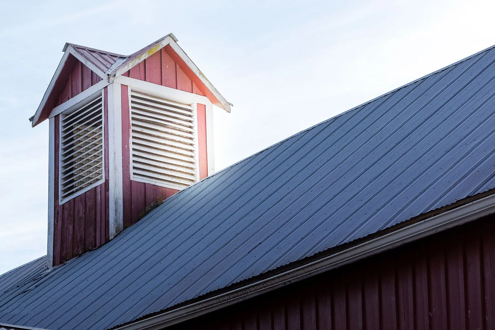
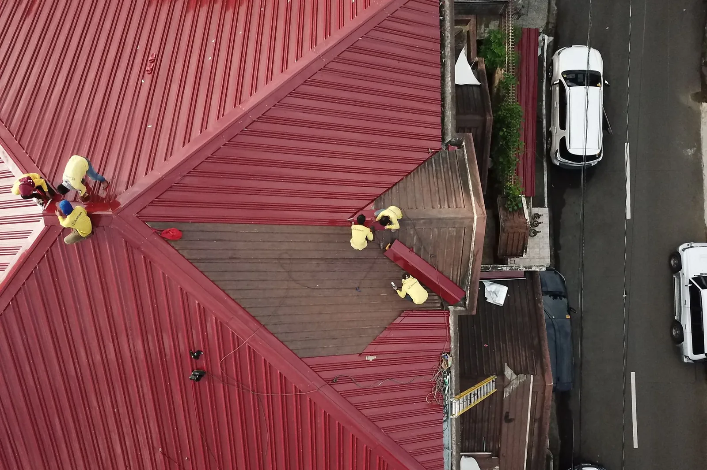

Paslauga 01
Stogų dengimas
Dengiame naujus šlaitinius ir plokščiuosius stogus, keičiame senas dangas. Dirbame su gyvenamaisiais namais, ūkiniais pastatais ir garažais Plungėje, Telšiuose, Mažeikiuose, Skuode ir visoje Žemaitijoje.

Kokius stogus dengiame
- Šlaitiniai stogaiNaujų namų, priestatų ir ūkinių pastatų stogai.
- Plokštieji stogaiPlokščių stogų dengimas ir įrengimas.
- Senų stogų keitimasKeičiame nusidėvėjusią dangą gyvenamuosiuose namuose, ūkiniuose pastatuose ir garažuose.
Viskas iš vienų rankų
Patys gaminame skardos gaminius ir prekiaujame jais bei stogų dangomis. Todėl kartu su danga galime paruošti ir skardos detales, kurių stogui reikia:
- Kraigai, vėjalentės, karnizai ir sąlajos
- Latakai ir lietvamzdžiai
- Palangės, parapetai ir kiti lankstiniai pagal jūsų matmenis

Kaip parenkame dangą
Dangos pasirinkimas priklauso nuo stogo formos, pastato paskirties ir jūsų biudžeto. Apžiūrėję stogą pasiūlysime, kas jam tinka, ir paaiškinsime skirtumus. Nieko neužsakote, kol sąmatoje nematote medžiagų, darbų ir termino.
Ką parašyti užklausoje
- Pastato tipas ir adresas, o jei nenorite rašyti adreso, bent miestas.
- Ar tai naujas pastatas, ar keičiama sena danga.
- Apytikslis stogo dydis, jei jį žinote.
- Nuotraukos, jei jų turite: jas galite pridėti prie laiško.
Kainą pasakysime apžiūrėję stogą vietoje.
Parašykite, ką reikia padaryti
Užtenka kelių sakinių: kur pastatas, koks stogas, kas negerai arba ką norite pasistatyti. Atsakysime ir sutarsime dėl apžiūros.